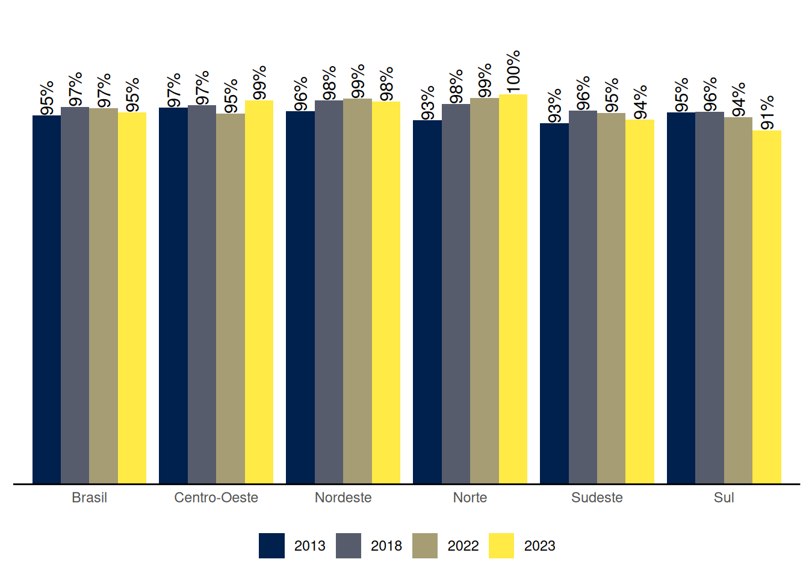
6 Participação e Controle Social no SUAS
A participação social é uma das diretrizes estabelecidas pela Constituição Federal de 1988 para a organização das ações da Assistência Social. Nesse sentido, a Lei Orgânica da Assistência Social (LOAS), que dispõe sobre a sua organização, instituiu em seu artigo 16 os Conselhos de Assistência Social em âmbito Nacional, Estadual e Municipal como instâncias de deliberação colegiada do SUAS, cuja composição deve ser paritária entre Governo e Sociedade Civil.
Os Conselhos integram o Sistema Único de Assistência Social (SUAS), juntamente com o Governo e as Entidades e Organizações de Assistência Social. A Resolução do Conselho Nacional de Assistência Social (CNAS) nº 100/2023, estabelece a definição dos Conselhos de Assistência Social, suas competências, criação, estrutura e organização. Esta resolução também trata do desempenho das conselheiras e conselheiros, bem como sua função de interesse público.
Outra resolução importante para organização do controle social no SUAS é a Resolução CNAS/MDS nº 99/2023, que caracteriza os usuários, seus direitos e participação na Política de Assistência Social.
Este capítulo apresenta os resultados apurados pelo Censo SUAS para os Conselhos Municipais e Estaduais de Assistência Social, considerando as dimensões de estrutura administrativa, dinâmica de funcionamento e composição.
Em 2023, assim como em anos anteriores, todos os Conselhos Estaduais de Assistência Social (dos 26 Estados) responderam ao formulário do Censo SUAS.
Vemos no Gráfico 6.1 os percentuais de Municípios que responderam ao Censo SUAS com informações sobre os Conselhos Municipais. Em 2023 observamos uma redução, de 97%, em 2022, para 95%, no percentual de Municípios que informaram possuir Conselho Municipal, devido a reduções em 1 ponto percentual no Nordeste e no Sudeste, e de 3 pontos percentuais no Sul. Por outro lado, houve aumento de 4 pontos percentuais no Centro-Oeste e a Região Norte teve 100% dos Municípios informando possuir Conselho Municipal.
6.1 Estrutura administrativa e dinâmica de funcionamento
Em relação aos Conselhos Estaduais, atualmente 100% informam possuir sede específica para funcionamento do Controle Social no SUAS, conforme pode ser observado no Gráfico 6.2. A existência de sede para o funcionamento dos Conselhos é essencial, pois além de garantir identidade na perspetiva de espaço ao qual a população pode acessar, também assegura o trabalho da/o secretária/o executiva/o e demais profissionais com a disposição de locais para arquivos e documentos, para reuniões, entre outros.
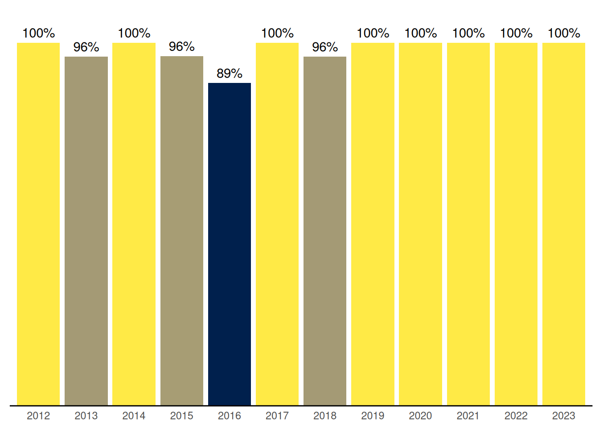
No que se refere aos Conselhos Municipais de Assistência Social, o Gráfico 6.3 mostra um crecimento ao longo dos anos no percentual de Conselhos Municipais que possuem sede para o funcionamento, com aumento de mais 2 pontos percentuais em 2023, chegando a 60%.
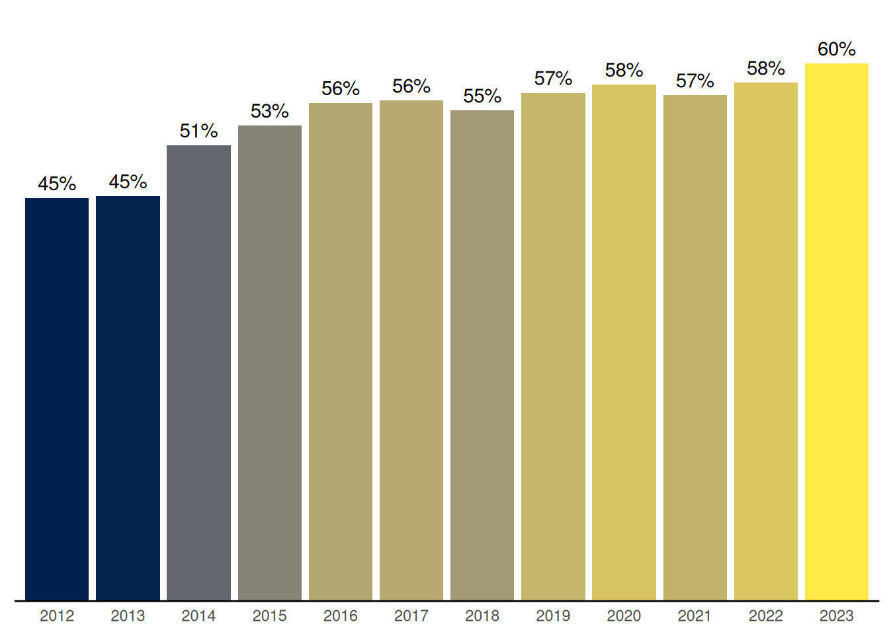
De acordo com a Resolução CNAS Nº 100/2023 os conselhos de assistência social deverão ter uma secretaria executiva vinculada ao conselho diretamente subordinada à presidência e ao colegiado, para dar suporte ao cumprimento de suas competências.
Vemos no Gráfico 6.4 o registro de uma oscilação ao longo dos anos no percentual de Conselhos Estaduais que possuem secretárias/os executivas/os trabalhando exclusivamente no Conselho, conforme a diretriz da Resolução para esses Conselhos, observando-se em 2023 uma oscilação para baixo.
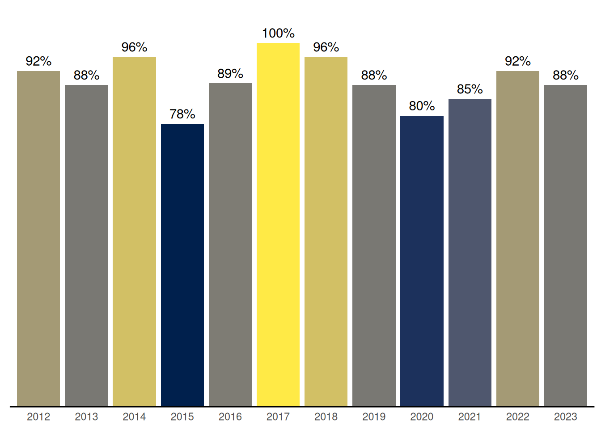
Nos Conselhos Municipais, vemos no Gráfico 6.5 que o percentual dos que possuem Secretaria Executiva (independente da/o secretária/o executiva/o trabalhar exclusivamente no Conselho ou não) avançou de 63% em 2012 até 80% em 2018, e desde então se manteve nesse patamar, com pequenas oscilações, oscilando negativamente em 2023 de 82% para 81%.
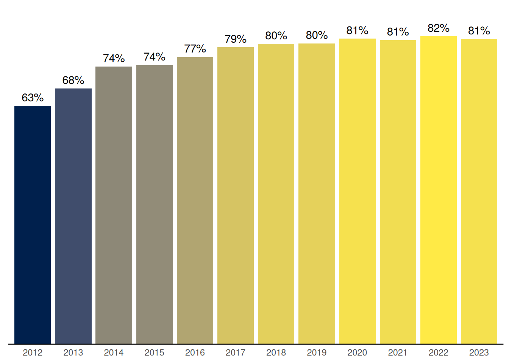
A legislação da assistência social diz que para os Municípios de Pequeno Porte I e II, a/o secretária/o executiva/o não precisa ser exclusiva/o. Por isso vemos no Gráfico 6.6 que apenas 10% dos Conselhos nos Municípios de Pequeno Porte I e 19% nos de Pequeno Porte II informaram possuir secretárias/os executivas/os trabalhando exclusivamente no Conselho. Nos Municípios maiores esse percentual vai crescendo junto com o Porte, mas ainda são percentuais baixos, sendo de 27% para os Municípios de Médio Porte, 50% para os Municípios de Grande Porte, e mesmo nas Metrópoles o percentual não chega a 100%, ficando em 95%.
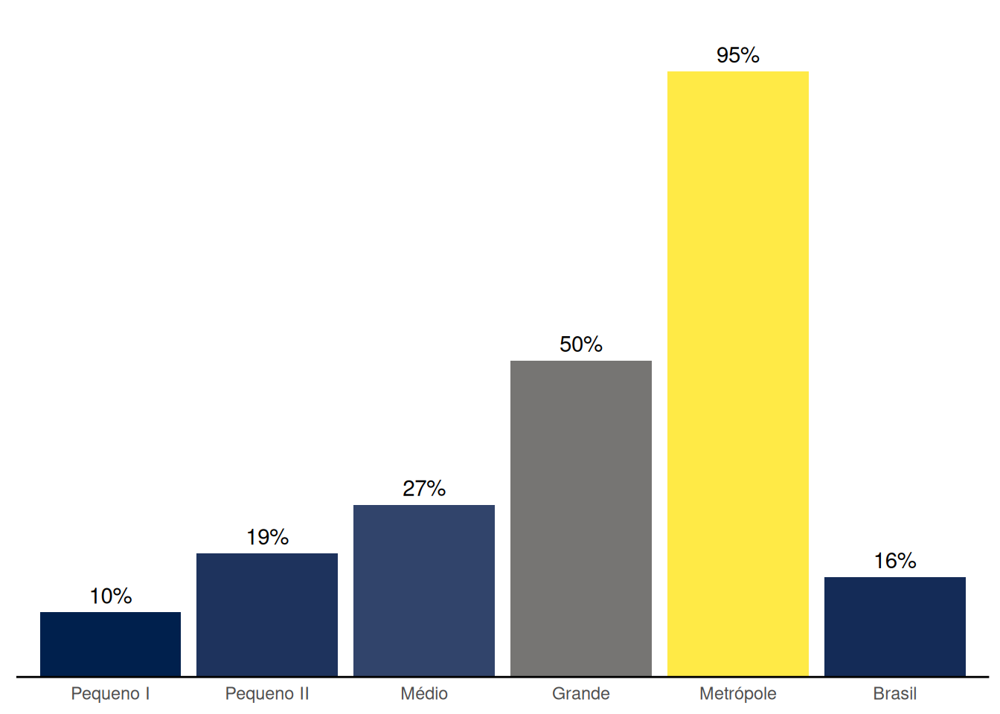
Em relação a dinâmica de funcionamento, o plenário deve, obrigatoriamente, funcionar uma vez ao mês, e, extraordinariamente, sempre que necessário. Vemos no Gráfico 6.7 que 73% dos Conselhos Estaduais realizaram 12 ou mais reuniões plenárias em 2022 (dados do Censo de 2023), enquanto 27% realizaram menos de 12 reuniões, ou seja, não chegaram a realizar uma reunião por mês.
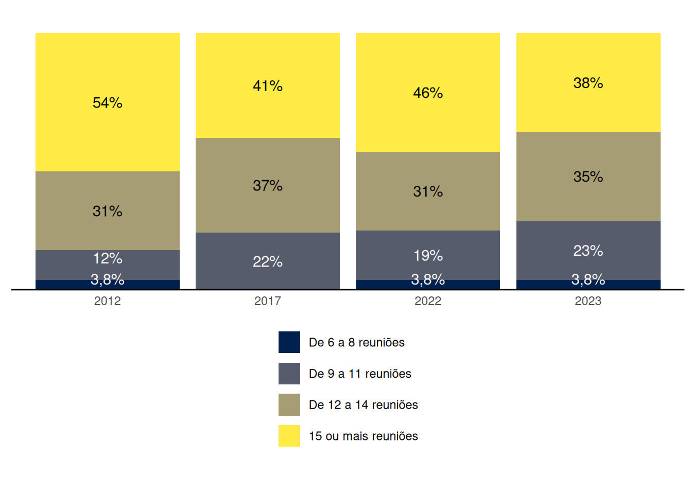
De acordo com a Resolução CNAS Nº 100/2023, a periodicidade das reuniões dos Conselhos, que devem ocorrer obrigatoriamente ao menos uma vez por mês, deve estar prevista no regimento interno do respectivo conselho.
Devido a um erro no formulário dos Conselhos Municipais do Censo SUAS 2023 não foi registrada a quantidade de reuniões realizadas pelos Conselhos que informaram não ter publicizado o calendário de reuniões. O Gráfico 6.8 mostra os percentuais por faixas de quantidades de reuniões realizadas pelos Conselhos Municipais, considerando apenas os Conselhos que informaram ter publicizado o calendário de reuniões, para que os dados existentes de 2023 sejam comparáveis aos dados dos anos anteriores. Vemos que no ano de 2022 (dados do Censo de 2023) 60% dos Conselhos fizeram menos de 12 reuniões (ou seja, não chegaram a fazer uma reunião por mês), e 40% fizeram 12 reuniões ou mais.
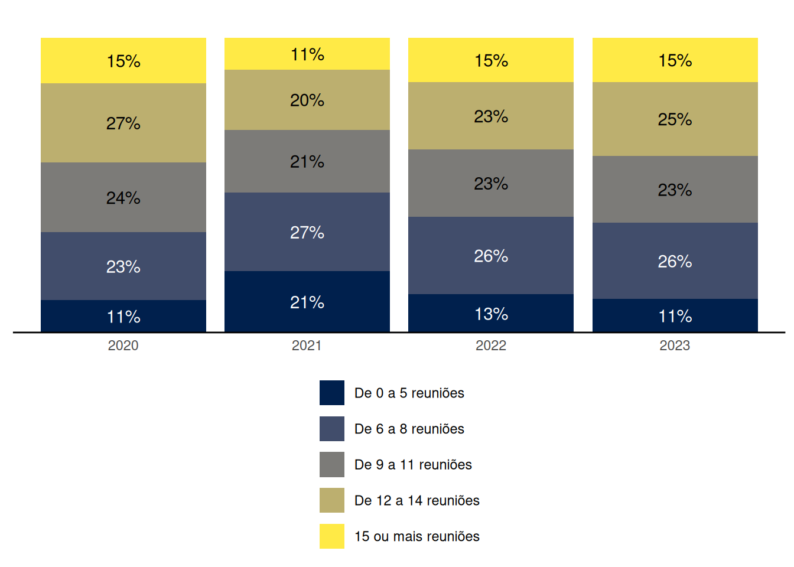
6.3 Deliberação sobre planejamento, orçamento e benefícios eventuais
A elaboração do Plano de Assistência Social é tratada na LOAS (Lei Organica de Assistência Social) e NOB SUAS / 2012. É de responsabilidade do órgão gestor da Política de Assistência Social e deve ser apresentado ao Conselho de Assistência Social para aprovação.
O Gráfico 6.13 mostra o percentual de Conselhos Estaduais que discutiram sobre os Planos de Assistência Social no ano anterior. Este percentual atingiu o máximo em 2021, quando 85% dos Conselhos Estaduais informaram ter discutido o Plano de Assistência Social no ano anterior (2020), e caiu para 65% em 2022, com nova queda em 2023, agora para 62%. De acordo com a LOAS a aprovação do Plano de Assistência Social deve ser quadrienal, entretanto, recomenda-se que a cada atualização anual ele seja submetido ao respectivo Conselho.
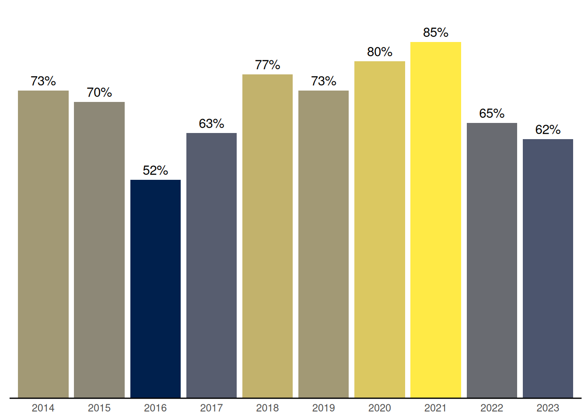
Em relação aos Conselhos Municipais, vemos no Gráfico 6.14 muita variação ao longo dos anos no percentual dos que informam ter discutido sobre o Plano de Assistência Social no ano anterior, observando-se uma grande queda no Censo de 2023 em relação ao Censo de 2022, de 82% para 67%.
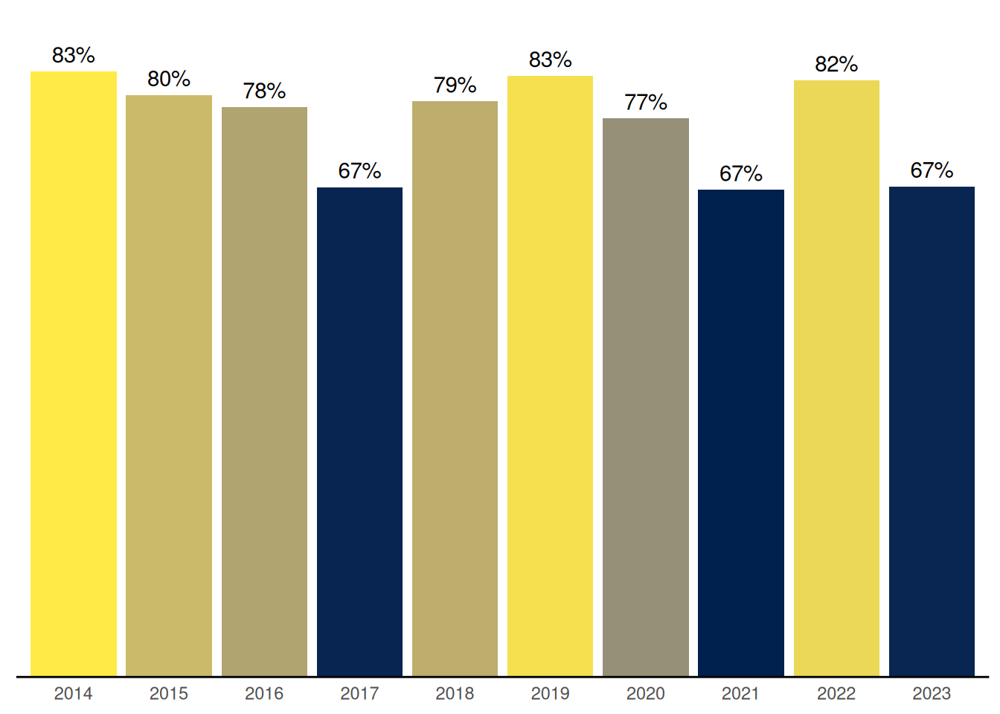
É papel do controle social o exercício democrático de acompanhar a gestão e avaliar a Política de Assistência Social. Assim, a aprovação do orçamento executivo ou Plano Plurianual de Assistência Social (PPA) deve ser exercida por esta instância. O Gráfico 6.15 mostra que em 2023 manteve-se em 69% o percentual de Conselhos Estaduais que deliberaram sobre a proposta orçamentária.
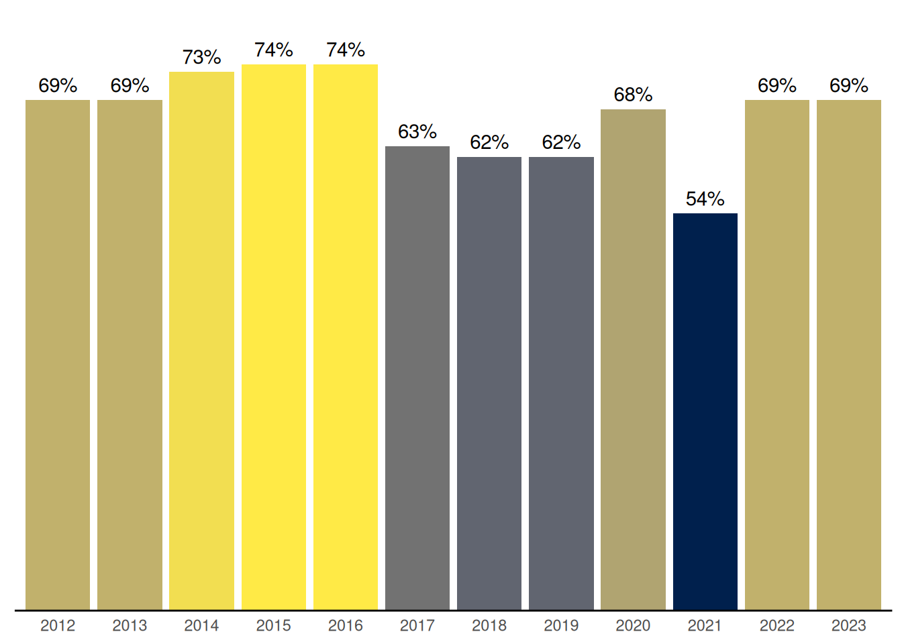
Em 2023 o percentual de Conselhos Municipais que deliberaram sobre a proposta anual de orçamento do executivo aumentou em 4 pontos percentuais, chegando em 78%, o percentual máximo da série histórica desde 2012 (Gráfico 6.16).
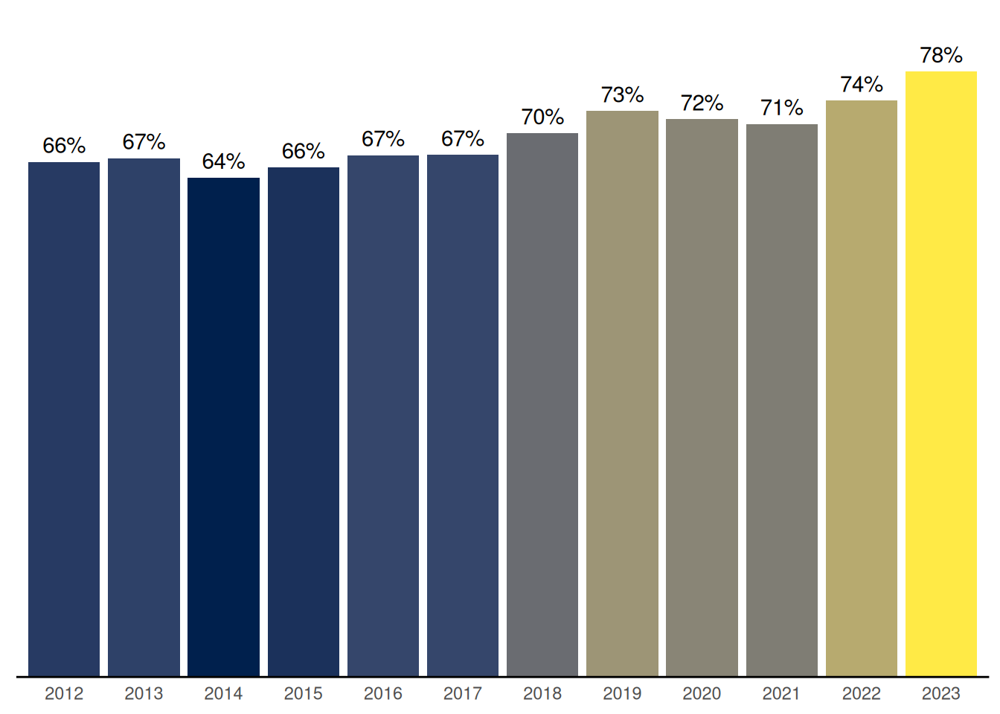